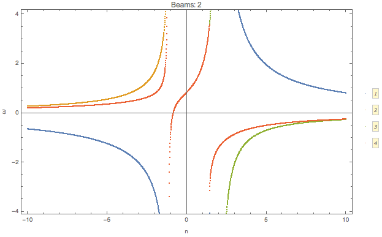
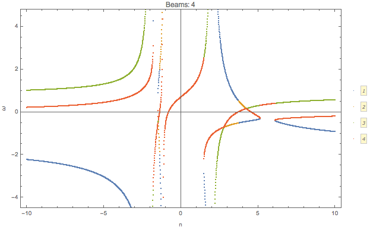
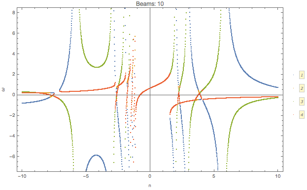
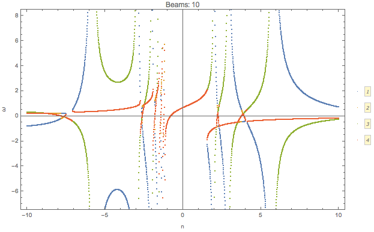

2.4. Dispersion Relation¶
Reference to notes:
Izaguirre, I., Raffelt, G., & Tamborra, I. (2016). Fast Pairwise Conversion of Supernova Neutrinos: Dispersion-Relation Approach, 21101(January), 1–6. https://doi.org/10.1103/PhysRevLett.118.021101
2.4.1. Polarization Tensor¶
In Raffelt’s paper, they parametrize \(k^\mu(n)\) then the polarization tensor is decomposed into two parts,
and
where
with \(k^\mu=(\omega,\mathbf k)\).
Note to self
The actual wave vector that determines the instability is \(K^\mu\) which is related to \(k^\mu\),
Since \(\Lambda^\mu\) and \(\Phi^\mu\) are real, imaginary part of \(\omega\) (\(\mathbf k\)) equal imaginary part of \(\Omega\) (\(\mathbf K\)). Thus we only discuss the dispersion relation of \(k^\mu\).
Density matrix is written as
The perturbation \(\epsilon\) is assumed to have the form
This assumption indicates that even though we find instabilities, a proper initial condition/boundary condition is required to stimulate this instability.
The polarization tensor is in fact
The equation of motion becomes
where
Since \(v_\mu\) is (component) of a null dual vector, we require \(\Pi^{\mu\nu} a_\nu\) to be (component) proportional to \(v^\mu\). Since we have a lot of directions, different \(v^\mu\) are independent of each other. So we require \(\Pi^{\mu\nu} a_\nu=0\).
Then we need to find the solution to
which is simplified to
We can multiply a minus on both sides. Note that
is the determinant of a matrix
where \(N'\) is a matrix with the first row of \(N\) multiplied by a minus sign.
Equivalently, we only need to find the eigenvalues of \(N'\).
2.4.2. Dispersion Relation¶
Raffelt et al proposed that can now solve the dispersion relation by finding the value of \(k^\mu(n)\) for each n. We make the plot \(\omega\) vs \(\mathbf k\).
Here is an example that I calculated.
The axial symmetric system can be calculated easily using this method. The paper gave an example of two polar angle beams with axial symmetry.
Fig. 2.14 \(\omega(n)\) for \(G=0.5 \delta(\cos\theta- 0.8) + 0.5 \delta(\cos\theta+0.2)\).
Fig. 2.15 Dispersion relation.
We can check what happens for multibeams. I can plot the dispersion relation for similar configuration but with different number of beams.

Fig. 2.16 Animition of dispersion relation.
dataPltNBeamsPlt[Join[Table[1/beams, {n, 1, beams/2}],
Table[-1/beams, {n, 1, beams/2}]],
Table[Pi/3 + n Pi/2/(beams - 1), {n, 0, beams - 1}], {-10, 10}, 0.049, {{-10, 10}, {-10, 10}}]
I plot the \(\omega(n)\) relation for different number of beams
 {kind=link}
{kind=link}
 

{kind=link}
Similar to the previous example, confining the range of \(n\) leads to only a partial patch of the dispersion relation.

Fig. 2.17 The code for it
pltDiffBeamsConfined[beams_] := dataPltNBeamsPlt[
Join[Table[1/beams, {n, 1, beams/2}],
Table[-1/beams, {n, 1, beams/2}]],
Table[Pi/3 + n Pi/2/(beams - 1), {n, 0, beams - 1}], {-1, 1},
0.049, {{-10, 10}, {-10, 10}}]
This should be the continuous limit?
As a comparison, we can plot the dispersion relation in a larger range of n for 10 beams.
Fig. 2.18 10 beams.
On the other hand, we can calculate the continuous limit for the same angle range.
Fig. 2.19 Dispersion relation for 10 beams (\(n\in [-1,1]\)), and continuous limit.
MEH
2.4.3. Analyze the Symmetries in Dispersion Relation¶
Four velocity can be expressed in terms of spherical harmonics.